+ shadow 10:00, 14:00, 18:00 · 1.635 °C
SWISSIMAGE 2021; Exact PET degrees from the Bern 2020 daytime 5 m raster; Direct degrees; 5 fold(s), 1 seed(s). Base ignore flags, buildings and invalid exact-raster pixels excluded.
A complete research account of predicting Bern’s modelled heat stress from aerial imagery: understanding the data, reconstructing labels, comparing photo years and input layers, testing models and investigating their errors.
We predict the 14-level heat-stress map of Bern from photos and compare three approaches, named by what the model outputs: Classification (one of 14 classes), Ordinal (13 ordered yes/no outputs) and Regression (one number in °C). With the 2021 photos the best Classification model reaches a mean error of 1.931 °C (median decoding, 20 runs), against 1.978 °C on the original photos. Argmax MAE improved in 20 of 20 paired runs; the median results improve in aggregate but are not established as paired seed-by-seed comparisons. Ordinal with the CORN head ties Classification on the original photos (1.976 against 1.975 °C). Regression with height, water and separate cast-shadow channels (sun at 10:00, 14:00 and 18:00) reaches 1.63 °C over five folds and two seeds, scored against exact degrees (a different, continuous scoring scale than the 14-level scoring used by Classification). The goal was 1.5 °C. Later test-guided tuning means the reported scores are development estimates, not an untouched final evaluation.
Three weaknesses shape every number below. The models barely reach the hot end: The mapped median classification and independent-threshold models predict almost no pixels at 43 °C or more, Regression does for about a tenth of the pixels that are that hot (0.71% of the exact target; see the hot-end chapter). The 2021 photos were chosen by date and forest colour and rank second on structure in the displayed ten-tile comparison. And photo capture and target conditions can differ, so data uncertainty can contribute to the measured error, without establishing its share.
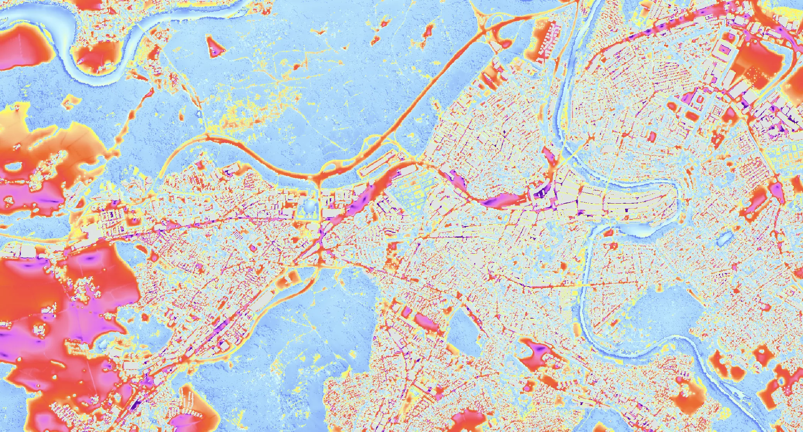
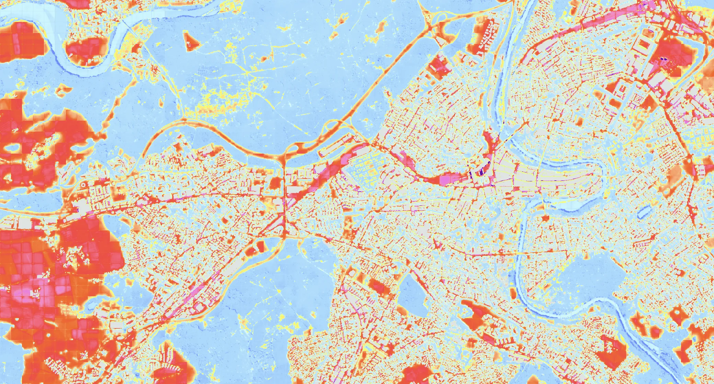
PredictionTrue mapErrors cluster in the western farmland and the dense centre. The 2021 photos rank second in the displayed structural comparison. Temporal, seasonal and land-use differences remain possible sources of error.
Takeaways the supervisors are after: working with image2image models, and evaluating performance and generalisability. Supervisors: Rafael Bischof, Andreas Müller.
The folder structure, duplicates, scales and spatial reconstruction explain what constitutes an independent example.
Every image is a 256 × 256 RGB PNG and pairs with its partner by id. Most folders are derived from one core set.
| Folder | Pairs | What it is | Use |
|---|---|---|---|
Satellite/ + Heatmap/ | 2,275 | Core tiles, ids 1–2275 | Train / val / test |
SatelliteMirror/ + HeatmapMirror/ | ~2,275 | Exact horizontal flips of the core (pixel difference 0.0) | Replace with on-the-fly flips |
Satellite_Large/ + Heatmap_Large/ | ~364 | Zoomed out, about 2× the ground width per tile | Scale-transfer test |
*Mirror_Large/ | 365 | Flips of the Large set | Skip |
00AllSatellite/ + 00AllHeatmap/ | ~5,300 | Union of everything above, plus 70 duplicate files named (1), (2) | Avoid |
heat_islands.zip | - | The same Images/ tree with __MACOSX metadata, 1.5 GB | Archive |
A random split over 00All* puts a tile in training and its mirror image in the test set. The scores would measure memorisation. We work from the core set only and flip during training.
Tile idN sits at row (N−1) // 65, column (N−1) % 65. Stitched together, the 2,275 tiles cover the city from the Wohlensee loop in the west to the Aare bend around the old town. Drag the slider to compare photo and heat map.
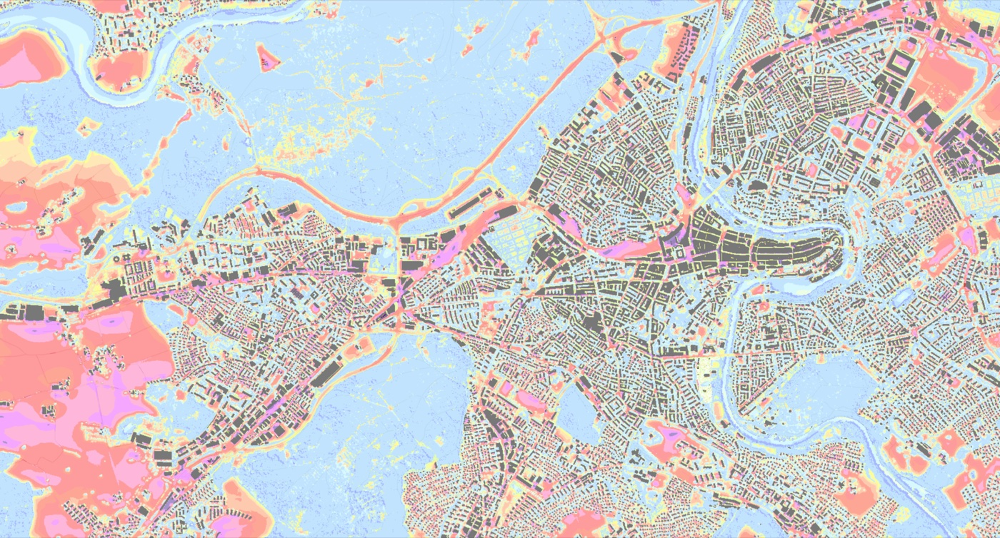
 PhotoHeat map
PhotoHeat map
From a rendered map to usable labels: palette, distribution, overlays, buildings, conflict flags and the exact source raster.
The target is physiological equivalent temperature (PET) from Bern’s modelled 2020 daytime heat-stress product, at 14:00. The unit is °C, but PET is not measured air temperature or remotely sensed surface temperature.
The initial investigation used web-map screenshots with fourteen ordered colours, buildings and street overlays. Later, the city’s raw 5 m GeoTIFF made exact-degree regression possible. Both representations are part of the research; they have different validity masks and evaluation scales.
Screenshot levels: palette reconstruction, coarse rendered cells and level-midpoint scoring.
Source raster: exact PET degrees placed on the same tile footprints, excluding raster no-data and buildings.
Do not rank models across these targets as if only the model changed.
Each pass answered a question the previous one raised.
Counted every RGB value across all 2,275 heatmaps (149 M pixels, 2,311 distinct colours). Twelve colours cover 90% of pixels and the rest are anti-aliasing and drawn-on street lines.
Assigned each pixel to its nearest main colour and flagged anything more than 12 RGB units away as overlay. About 95% of pixels per tile snap cleanly.
First estimate: the mean greenness of the photo under each colour. Then the map.bern.ch legend arrived, and we fitted it directly as a semi-transparent blend.
Compared the edge pixels of neighbouring ids. id+1 continues to the right, and id+65 sits directly below in 200 of 200 samples. The tiles form one stitched map.
Mapped every pixel to one of the 14 temperature levels and compared the core and Large sets.
Tiles were exported with different layer opacities (0.50 to 0.73) and, in three tiles, a darker building grey. Each tile gets its own fitted palette before decoding.
Fitted one grid of cell boundaries over the whole stitched map. 98.55% of cells contain a single colour, so the cells are the true units of the data.
Compared the heatmap's building outlines with what the photo shows, in both directions: outlines with no building, and buildings with no outline.
The tiles show softer colours than the legend. Blending each legend swatch with a near-white background (0.6 · legend + 0.4 · 250) and matching it to the observed colours gives a one-to-one assignment with a mean error of 12.5 RGB units. So the target is an ordered temperature scale, not a set of unrelated classes. The five categories in the last column are shown with English names; on map.bern.ch they read keine, schwach, mässig, stark and extrem Wärmebelastung.
| Level | Range | Legend | In tiles | Fit error | Heat-stress category |
|---|
Grey is the building mask and carries no temperature. Legend colours: Geodaten Stadt Bern (map.bern.ch).
The worst fit is > 43 °C (error 39.8): dark purple loses the most in a blend. It is still the only plausible partner, and it covers just 0.7% of pixels.
Excluding buildings and overlay pixels, over half of the area sits at 23–29 °C (forest, parks, water edges). A second peak sits at 38–42 °C (sealed surfaces, rail, open fields). The middle levels are thin. This shape decides the loss: a plain mean-squared regression would hedge towards 32 °C where it is unsure, a value that is rare in the data.
| Level | Core % | Large % | Diff (pp) |
|---|
Heat data: Geodaten Stadt Bern. The core and Large sets have nearly the same distribution (at most 0.4 percentage points apart per level), but similar histograms alone do not establish a fair transfer test; geographic overlap, rendering and resolution still need control. Heat raster cells measure 9.45 px in core tiles; the Large tiles mix 7.55 and 11.35 px.
The heat values were computed on a coarse raster and then drawn with street lines and names on top. Fitting one grid over the stitched map gives cells of 9.45 px in both directions. With that grid, 98.55% of cells hold a single colour.
The cleaning rule follows from it. A pixel that already matches a legend colour keeps it. A pixel that does not (line, label, anti-aliasing) takes the most common level of its cell. That changes no correctly coloured pixel. Before cleaning, 4.29% of pixels were unreadable; after, 0.077% remain unknown, all in places where the source map has no value.
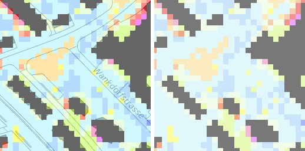
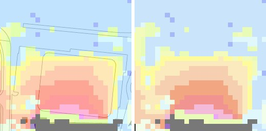
A first version assumed one palette for all tiles and decoded half of id 382 as unknown, although its buildings are plainly visible. Fitting the layer opacity per tile shows several export batches: 1,411 tiles at 0.64, 360 at 0.55, 96 at 0.63, and a few others. Tiles at the common opacity are unaffected by the fix (0.01% of pixels change). Anyone downloading more tiles later should expect the same variation.
The grid's offset moves by about 0.85 px from one tile to the next (256 mod 9.45). The city's heat map was rasterised once and then cut into tiles, so every cell boundary can be computed from a tile's row and column.
The building outlines in the heat map and the photo were made at different times. Some outlines sit on open fields (planned or newer buildings), and some buildings in the photo have no outline, so the heat map gives them a temperature.
A first check looked at vegetation under each of the 14,241 outlines. 515 outlines (1.06% of building area) are more than 60% vegetated. That check also catches green roofs, which are real buildings. For a reliable flag in both directions, a small building detector (a U-Net) is trained on the photos in 5 spatial folds, so each tile is judged by a model that never saw its neighbourhood. It reaches a building IoU of 0.62 to 0.66 per fold. Where it confidently disagrees with the heat map, the area is flagged: an outline whose mean building probability is below 0.15, or a region above 0.85 with no outline.
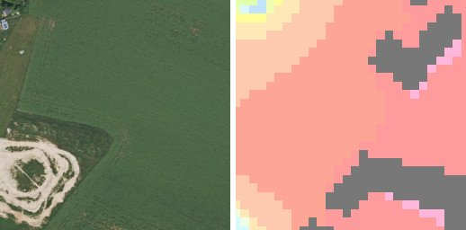
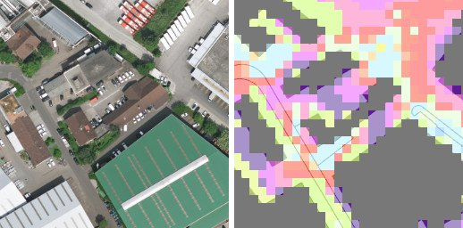

Flagged regions and a ring of 6 px around them are excluded from training and evaluation, like unknown pixels. The heat next to a mismatch was modelled with a different building layout than the photo shows.
All 2,275 tiles decoded to levels, with buildings and the areas to ignore marked. Additional unknown/mismatch flags cover 0.80% of raw pixels. Including buildings, about 14.05% are unscored for the original-level evaluation; exact-target evaluation leaves about 15.70% unscored.
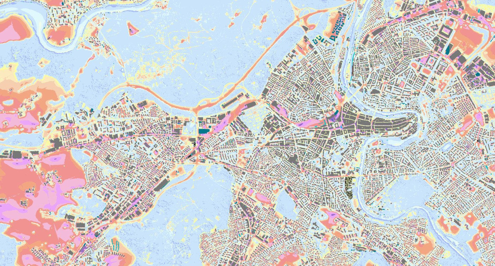

| Ignored for training | Regions | Share of pixels |
|---|---|---|
| No value in the source map | - | 0.08% |
| Outline without building in the photo | 581 | 0.29% |
| Building in the photo without outline | 237 | 0.10% |
| Ring of 6 px around a mismatch | - | 0.33% |
| Additional flags | 0.80% |
The flags come from a detector, not from ground truth, so they are suspected mismatches. A sample check found the "building without outline" flags reliable; some small "outline without building" flags sit on sheds and garages the detector misses. They cover little area and were kept.
Using simple colour rules on the photo (green vegetation, brown or bare, grey sealed), the heat level of each surface differs a lot. Mean level is 3.6 over green vegetation, 6.5 over grey sealed surfaces and 8.0 over brown or bare ground.
Two kinds of disagreement stand out. Green and hot: the photo shows vegetation, but the heat is 40 to 41 °C or hotter. This is 7.1% of heat pixels, mostly crop fields. Brown and cool: the photo shows bare ground, but the heat is 26 °C or cooler. This is 0.13%.
A disagreement is a suspicion, not an error. The heat may have been computed on another date, when the field was bare. The colour rule is also crude: brown catches roofs and soil alike.
| Photo says | Heat says | Share of heat pixels | Reading |
|---|---|---|---|
| Green vegetation | 40 to 41 °C or hotter | 7.09% | Mostly crop fields: date mismatch or label noise |
| Brown or bare | 26 °C or cooler | 0.13% | Rare; cut-over forest and soil |
Two masks are prepared, so each model can choose. The base ignore flags cover 0.80% of raw pixels, in addition to the separate building exclusion. The land-cover mask adds the two conflict types, bringing the additional ignored share to 7.01% of raw pixels; buildings are still excluded separately. Excluding them removes the farmland examples most needed for learning, so the choice should be tested rather than assumed.
Manual review: a tile-by-tile viewer shows the flags next to the photo and the heat map. Heat data in those views: Geodaten Stadt Bern.
The city's own raster has 5 m cells, finer than the 9.45 px heat cells in our tiles. To use it, each tile has to be put on the right spot of the GeoTIFF (LV95 coordinates). We fitted the footprint of the tile grid against the raster: pitch 135.5 m, origin at E 2594060 shifted by +5 label px, and N 1201890.
 Photo
Photo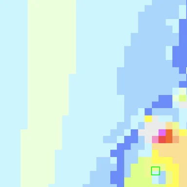
Current heat labels 5 m GeoTIFF, +5 label px
5 m GeoTIFF, +5 label pxPhoto provenance is an experiment in its own right: acquisition, footprints, structural matching, colour, dates and the 2020 follow-up.
The supplied Bern photos came with enough information to identify a source family, but not enough to reconstruct their acquisition. SWISSIMAGE 10 cm from swisstopo is the recorded source. The capture year of the supplied copies was not recorded. Their PNG files carried no coordinates, and the October check found no world files or tile index in the supplied image directory or archive. A tile number joined a photo to a heat tile; it did not say where that tile lay in Swiss coordinates.
This left two separate research questions. Which available imagery resembles the supplied photos? And what geographic area should be requested to acquire a replacement? Matching a roof or a forest colour can help with the first question. A reproducible replacement also needs the second, independently of any guess about the original flight year.
| Photo set | What identifies it | What the date means | Role in the experiments |
|---|---|---|---|
| Supplied original | The original numbered RGB tiles; recorded source SWISSIMAGE 10 cm | Capture year unknown. Visual similarity to a dated reference does not supply missing metadata. | The initial training images and the “original” side of the replacement comparison |
| Acquired 2021 | 2021 items in the open SWISSIMAGE 10 cm index, cropped onto the fitted Bern grid | Flight-year 2021 source product, explicitly selected during acquisition | The replacement photo set used in the subsequent Bern recipes |
| WMS 2020 | SWISSIMAGE product WMS requested with TIME=2020 on the same grid | A dated service time slice. The build does not record individual exposure dates. | A separate test of imagery selected for the label year |
Choosing 2021 as a working reference did not date the supplied photos. Acquiring a new set from explicit 2021 items made that replacement's provenance clearer. The uncertainty about the original copies must stay attached to results using those copies; it should not be transferred to the new set as if its selected source year were unknown too.
The SWISSIMAGE product name was not enough to infer scale. Multiplying 256 pixels by 10 cm would make each supplied tile only 25.6 m wide. The 65-column, 35-row mosaic would then cover about 1.66 × 0.90 km, implausibly small for the Bern coverage under investigation. The supplied tiles could have been resampled. The source pixel size therefore could not be treated as the final tile's ground sampling distance.
The first attempts tried to place the stitched photos directly against reference imagery. Normalised cross-correlation of the 65 × 35 mosaic against an 8 km SWISSIMAGE window gave no stable scale or location. The matcher recovered a reference cut-out at exactly its known offset, but on the real mosaic the best score favoured the smallest tested scale and the offsets jumped between scales. A second search used the river-and-lake tile 201 at footprints from 6 to 26 m. Its best and next-best peaks stayed less than 0.04 apart, and the locations still jumped. Neither attempt established a reliable georeference. Those candidate placements were not adopted.
The later footprint fit used the heat labels and the city's georeferenced 5 m PET raster. The fitting script assembles the numbered label mosaic, bins the raster into the same 14 legend levels, and searches pitch and translation by agreement of valid level cells. It searches coarsely at 10 m, then refines around the best pitch at 5 m. This gives a geographically anchored label-grid fit rather than a flight-date estimate from photo appearance.
The recorded working placement has a 135.5 m tile pitch, top edge N 1201890, and left edge E 2594060 plus five label pixels in LV95 (EPSG:2056). Here a label pixel means 135.5/256 m, so the eastward correction is about 2.65 m, not five 5 m raster cells. At this placement tile 201 agrees with the binned raster on 99.6% of pixels, and on 92.4% inside the separately checked block. These are agreement checks for that tile and block, not a surveyed positional accuracy or a grid-wide guarantee. The guide's placement comparison shows the check.
Both replacement builders use the same rule: tile i has row floor((i − 1)/65) and column (i − 1) modulo 65; columns advance east by 135.5 m and rows advance south by 135.5 m. Each requested footprint becomes a 256 × 256 RGB tile. The resulting image scale is about 0.529 m per pixel, even when the source orthophoto is 10 cm. The fitted extent is shared by the imagery and label processing; it is not a recovered world file from the original photos.
The 2021 builder selects items from swisstopo's open ch.swisstopo.swissimage-dop10 index. For each footprint it identifies all intersecting 1 km squares, requests the item with year 2021 and the square's coordinate identifier, and chooses the 0.1 m TIFF asset. Downloads are cached; interrupted transfers are removed and retried. This is a source-tile download and crop workflow, rather than a screenshot of a web map.
A Bern tile can cross a source-square boundary. The builder reads each TIFF's top-left tiepoint, crops the intersecting pieces onto a 0.1 m canvas, checks that the canvas is completely covered, then downsamples it to 256 × 256 with Lanczos resampling. A footprint with uncovered canvas pixels is reported and omitted instead of silently extending an edge. The numbered output files go into data/Satellite2021, separately from the originals. The code defines all 2,275 grid positions; its coverage check is a build safeguard, not evidence that the original images shared the same acquisition pipeline.
The available-year search and the photo comparisons below explain why 2021 was chosen for this acquisition. They do not establish an exact day, season or uniform exposure time for the entire replacement. The later 2020 test also uses a different delivery path, which matters when interpreting a photo-year comparison.
The labels are the Bern PET map for 14:00 in 2020 (Stadt Bern, GeoTIFF with 5 m cells). The supplied original photos are recorded as SWISSIMAGE 10 cm from swisstopo, but their capture year was not recorded. For the same 1 km square the open index lists three years: 2018, 2021 and 2024. No 2020 or 2023 item was found for that square in this index. That is a statement about these downloadable items, not proof that no imagery could be obtained through another service.
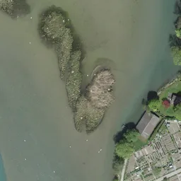
SWISSIMAGE 2018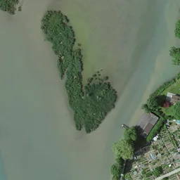
SWISSIMAGE 2021 SWISSIMAGE 2024
SWISSIMAGE 2024For ten tiles we measured how well each year lines up with the supplied original: correlation at the same footprint, taking the best shift within ±6 px. Higher correlation means a closer image match under this check; it is not a capture-date probability. The small shift search accommodates residual alignment differences, while vegetation, light and land-use changes can still affect the scores.
| Tile | 2018 | 2021 | 2024 | Best year |
|---|---|---|---|---|
| 346 | 0.55 | 0.51 | 0.58 | 2024 |
| 236 | 0.62 | 0.62 | 0.72 | 2024 |
| 587 | 0.85 | 0.11 | -0.03 | 2018 |
| 488 | 0.36 | 0.26 | 0.42 | 2024 |
| 1002 | 0.47 | 0.51 | 0.59 | 2024 |
| 1233 | 0.35 | 0.30 | 0.53 | 2024 |
| 1580 | 0.32 | 0.60 | 0.51 | 2021 |
| 1812 | 0.33 | 0.59 | 0.63 | 2024 |
| 2098 | 0.22 | 0.36 | 0.30 | 2021 |
| 2078 | 0.14 | 0.44 | 0.46 | 2024 |
| Mean | 0.42 | 0.43 | 0.47 | 2024 best on 7 of 10 |

Photos taken in different seasons show forests in different greens. On green-dominant pixels of the same tiles, the supplied original has R 68, G 89, B 63 . The recorded colour-distance diagnostic gives the following distances to it. These are image-colour units, not degrees or a measured seasonal offset; colour similarity cannot distinguish acquisition date from light or image processing.
| Year | Distance to original forest colour | Reading |
|---|---|---|
| 2021 | 9 | Closest |
| 2024 | 23 | Least green (green lead 17 vs 23) |
| 2018 | 26 | Furthest |
Among the three indexed candidates, 2021 is nearest to the 2020 label year and closest in forest colour. It is second on mean structural correlation (0.43, above 2018's 0.42 and below 2024's 0.47), not the weakest. The per-tile winners and tile 201's building discrepancy do not identify one clean year for the supplied originals; a mixed-date source remains a possibility, not a demonstrated fact. We therefore acquired a separate, explicitly selected 2021 set rather than relabelling the originals as 2021. At the time, Bern's own 2020 or 2023 orthophoto downloads remained an unverified lead. The later 2020 WMS acquisition below supersedes the idea that a missing 2020 item in this index prevented a label-year experiment; it does not establish that a Bern-city download was found.
The initial selection was a choice among available reference items, not the end of the imagery investigation. On 13 November a request to the SWISSIMAGE product WMS with TIME=2020 returned imagery for tile 201 at the fitted EPSG:2056 footprint. Its mean absolute channel difference from the 2021 response was 17.5 on a 0–255 scale. This ruled out an identical returned image for that check. It did not, by itself, verify each pixel's exposure year or establish uniform dates across the full service mosaic.
The new builder requested one WMS 1.3.0 GetMap image per Bern tile from ch.swisstopo.swissimage-product, with TIME=2020, CRS=EPSG:2056, a 256 × 256 output and the same 135.5 m bounding-box grid as the 2021 build. It saved RGB PNGs into data/Satellite2020, preserving the tile identifiers and leaving the 2021 set unchanged. The build notes record 2,275 tiles, no failures, no blank tiles and no wrong-size tiles.
The geographic request is controlled, but the image-delivery pipeline is not identical. The 2021 set comes from 10 cm TIFF squares assembled and downsampled locally. The 2020 set is rendered by a WMS directly at the requested output size. The experiment therefore compares two acquired photo sets, including their appearance and delivery differences. It cannot isolate calendar year from season, light, product rendering or resampling. Calling the second set “2020” records the requested service time slice; the build does not include an exposure-date audit.
Three difficult forest tiles made the date gap a concrete concern. In tiles 604 and 478, pale, low-height strips read as clear-cut or thinned forest in the 2021 photo. The model predicts too cool over part of 604 and over strips in 478, while tile 281 has the reverse error: a dense stand is predicted too warm. The notes report tile MAEs of 3.45, 2.30 and 2.77 °C for 604, 281 and 478, with local signed errors approaching −8 °C in 604 and +8 °C in 281.
The 2020 and 2021 photos differ strongly on these tiles: mean absolute colour differences are 35–42 on a 0–255 scale. The clear-cut strips in 604 and 478 are visible in 2021 but not in the 2020 image; 604 also shows more open ground in 2021. This suggested that changed forest cover might put the later photo out of step with the 2020 PET target. It was a testable hypothesis from a few examples, not a measured cause. The same comparison also changes canopy colour and lighting, and the observations do not identify whether felling, storm damage or thinning caused the visible change.
The first check kept the model trained on 2021 photos and substituted the 2020 photos only at inference. On fold 0 its MAE rose from 1.749 to 1.986 °C over the same 26,025,830 scored pixels. That shows sensitivity to a photo-set change. It does not answer whether training on the earlier photos would help, because the model had never learned their appearance.
The follow-up trained and scored on the 2020 set. It used the same regression recipe with height, water and a 14:00 shadow layer, seed 0, 60 epochs, the base mask and spatial fold 0. The target remained exact values from the Bern 5 m PET raster, with the same 26,025,830 scored pixels. The saved result records an L1 loss in degrees and a single output channel. This is a regression test against exact temperatures; its scores should not be conflated with the earlier classification comparison between the originals and acquired 2021.
| Training photos | Test photos | Test MAE, °C | What this checks |
|---|---|---|---|
| Acquired 2021 | Acquired 2021 | 1.749 | The matched reference recipe |
| Acquired 2021 | WMS 2020 | 1.986 | An inference-only image-set swap |
| WMS 2020 | WMS 2020 | 1.912 | Retraining and scoring on the label-year service slice |
Retraining recovers about 0.074 °C compared with the inference-only swap, but remains about 0.163 °C worse than the 2021 reference. Selecting imagery for the label year did not improve this recipe on fold 0. The notes explicitly withdraw photo–label year mismatch as the main explanation for the large forest errors. The visible forest changes remain real observations; this experiment does not show that they caused the errors, or that their local effect is zero.
The 2020 WMS imagery appears more saturated, with leaf-on canopy and different light in the comparison. That may make it a less useful input for this target, but the project has not separated those effects. Nor does a single seed and fold establish that 2021 is the better choice for every split, architecture or area. The result supports keeping the acquired 2021 set for this tested recipe; it is not a universal ranking of acquisition years.
The original photos' dates remain unknown. The 2018/2021/2024 comparisons describe resemblance, and their mixed winners are compatible with several explanations. The label-based georeference remains a fitted placement with local agreement checks, not recovered acquisition metadata. For the 2020 set, the recorded provenance is the WMS layer and requested time slice, with no per-pixel flight-date verification. For the forest failures, local surface change, seasonal appearance and unexplained model behaviour remain distinct possibilities. The aggregate retraining result does not provide per-tile attribution among them.
Evidence trail: project notes dated 29 October (failed photo georeferencing), 9 November (source, footprint and three-year comparison), 13 November (2020 acquisition and inference-only check), and 16 November (forest hypothesis and its retraining test); the two satellite builders; the label-footprint fitting script; and the saved reg_exact_2020_shadow_fold0 result. Photos: ©swisstopo. PET target: Geodaten Stadt Bern, Klimaanalyse Wärmebelastung PET Tag 2020.
The current regression recipe uses RGB, height, mapped water and three computed shadow channels. Bright-flat, settlement and sky-view inputs were tested but not adopted.
The current recipe uses RGB, height, water and three shadow channels. Bright-flat and settlement are exploratory alternatives.
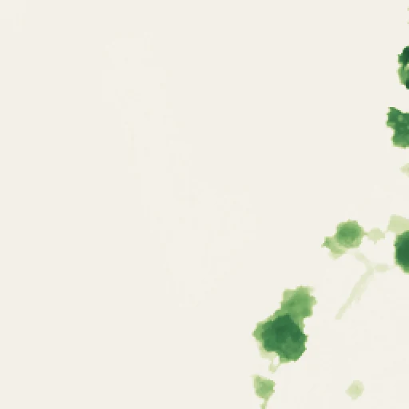
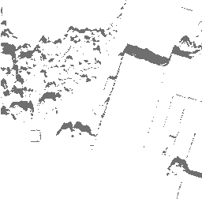
Pulled apart for display, in the order of the list. In the model, the layers are read at the same pixel.
Roofs, roads, trees and water as colour and texture, seen from above.
©swisstopo, SWISSIMAGE 10 cm, 2021
How tall buildings and trees are. A photo cannot show this.
©swisstopo, swissSURFACE3D minus swissALTI3D
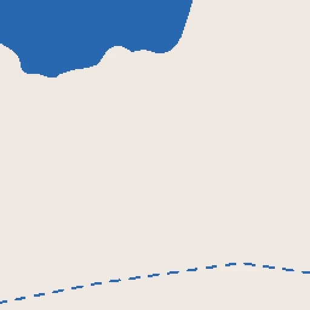
Rivers and lakes from the map. It is a 2026 release on 2021 photos, so the edges do not always match. A photo alone cannot tell water from bare ground, and small channels are often missed.
©swisstopo, swissTLM3D (2026 release)
Geometric shade computed at 10:00, 14:00 and 18:00 on 21 June. Three separate channels are used; this illustration shows the 14:00 example only.
Computed from swissSURFACE3D minus swissALTI3D
Smooth, bright surfaces such as plazas and paving, found from the photo. The model over-heats these, so this marks where it should be careful. Tested on one fold: no gain (1.75 against 1.749 °C), and leaving these pixels out of training or scoring changes the error by about 0.01 °C.
©swisstopo, SWISSIMAGE 10 cm, 2021
Sealed, built surfaces from the land-cover map. Too broad to carry the error alone, and about 60% of the remaining error lies inside it, spread across the class.
©swisstopo, VECTOR25 land cover
Colour groups (green, brown, grey, other) were built from the photo too, but the best runs do not use them.
The adopted recipe receives eight channels: RGB (three), height above ground, mapped water, and separate shadow estimates at 14:00, 10:00 and 18:00. Layers are sampled on the same tile footprint and read at the same pixel; the exploded picture illustrates alignment, not a sequence of network operations.
Height: swissSURFACE3D minus swissALTI3D supplies building/tree height above terrain. It describes geometry, not thermal material properties.
Water: swissTLM3D water polygons supply mapped extent. The 2026 release is newer than the 2021 photos and 2020 PET target, so boundaries and historical changes need care.
Cast shadow: height geometry and the sun position on 21 June determine geometric shade at three hours. This is computed shade, not a measurement of the photo’s actual illumination and not a full PET simulation. The stack shows the 14:00 example, while the recipe uses three channels.
Exploratory inputs: bright-flat ground from photo appearance and settlement from VECTOR25 were tested as alternatives. They are not automatically added to the eight-channel headline recipe. Photo-derived colour groups and sky-view factor are separate experiments too.
Unknown and mismatch flags control which pixels contribute to the loss and metrics. They are not supplied as input channels. Buildings remain unscored.
Architecture, output formulation, decoding, spatial folds, validity masks and the limits of adaptive evaluation.
The original RGB head comparisons are named by what the model outputs. Within that comparison they share the backbone family (a U-Net, with an ImageNet ResNet-34 encoder for the main runs), the split, the photos and the metrics. Within this original-photo comparison, the intended difference is the output and loss. Newer imagery, exact targets and extra-layer recipes are separate comparison groups. Two people run them: Timo runs Classification and Regression, Chenjie runs Ordinal. Layered regression is the current reference recipe; a final independent evaluation is still pending.
Split: five spatial folds of 5 × 5 tile blocks, the same for every run (the Split chapter below explains why). Photos: the original photos, and subsequently the explicitly acquired 2021 set for classification and layered regression, with one-fold layer-input ordinal tests too. Labels: the 14 heat levels from the Bern map; Regression can also use exact degrees. Metrics: MAE in °C, accuracy within one level, and accuracy on the five heat-stress categories, which non-specialists can read. Training: 60 epochs, batch 16, AdamW with learning rate 0.002, OneCycle, flips and rotations, smoothed model selection, base mask, RGB input, seed 0 unless the row says otherwise. Every approach is also meant to run with the land-cover mask, so that the effect of excluding the conflicts is measured, not assumed.
Side tasks, also open: an RGB regression (pix2pix-style) reference, and a search for a photo closer in date to the heat map (SWISSIMAGE 2021 is chosen for now, Bern's own orthophoto is still open).
The tiles are neighbours on one map, and neighbours look alike. A random split would put near-twins on both sides and flatter the scores somewhat. Our plan:
The in-Bern test asks "how good on unseen tiles of this city". Outside imagery asks whether the model transfers; quantitative claims require suitable target data and clearly stated protocol differences.
The comparisons differ in photo version, target, mask, channels, decoder and fold/seed coverage. Headline scores average run MAEs equally; city-map scores weight each valid pixel equally. The displayed three-hour regression map uses seed 1, while its headline combines two seeds.
The intended protocol selects settings using validation and reserves testing for the final recipe. Later experiments repeatedly used test performance to retain or reject variants. The reported comparisons remain measured results, but are development estimates subject to adaptive selection. No evidence here establishes that test samples entered training. Independent final validation remains pending.
Within-one-level and heat-category accuracy must name their decoder too. Some historical tables combine median-decoded MAE with argmax auxiliary metrics; their superscripts preserve that distinction.
The input-layer ablation holds regression, exact PET target and photo year fixed. The original-photo classification/ordinal comparison changes the output formulation; the classification photo-year experiment changes the imagery. Scores across these groups are not directly rankable.
SWISSIMAGE 2021; Exact PET degrees from the Bern 2020 daytime 5 m raster; Direct degrees; 5 fold(s), 1 seed(s). Base ignore flags, buildings and invalid exact-raster pixels excluded.
SWISSIMAGE 2021; Exact PET degrees from the Bern 2020 daytime 5 m raster; Direct degrees; 5 fold(s), 1 seed(s). Base ignore flags, buildings and invalid exact-raster pixels excluded.
SWISSIMAGE 2021; Screenshot heat-level midpoints; Median; 5 fold(s), 4 seed(s). Base ignore flags and buildings excluded.
Individual metrics in this summary are rounded; checkpoint pairing with original-photo median runs is not established.
Original SWISSIMAGE copies, flight year not recorded; Screenshot heat-level midpoints; Median; 5 fold(s), 1 seed(s). Base ignore flags and buildings excluded.
SWISSIMAGE 2021 (run config); Exact PET scoring; level-valued predictions; Stored default classification metric; 1 fold(s), 1 seed(s). Base plus exact-raster validity.
Extra channels described in project notes; absent from saved run config. Not a controlled ablation against original-photo headline results.
2021 according to experiment notes; omitted from run config; Exact PET scoring according to experiment notes; Median; 1 fold(s), 1 seed(s). Base plus exact-raster validity according to experiment notes.
Photo/target/channel provenance incomplete in saved config; scope supplied by dated notes, not independently reconstructed.
Regression with the exact target, five spatial folds, seed 0 (the table keeps seed 0 fixed; additional seed coverage is noted below). Each step adds one input to the step above. Large dot: mean over five folds. Small dots: the five folds. The vertical goal line marks 1.5 °C.
Each added input lowers the mean in this ablation; height and the 14:00 shadow give the two largest steps, about 0.11 °C each. Every row on this ladder is seed 0. Second-seed runs also exist for height + water; for the final two rows, combining the seeds gives means of 1.657 (14:00 shadow) and 1.630 (three hours), the figure used in the headline. Classification and CORN now also have layer-input tests on fold 0. Those exploratory runs are reported separately; this ladder isolates regression inputs on five folds.
| Inputs | Fold 0 | Fold 1 | Fold 2 | Fold 3 | Fold 4 | Mean MAE (°C) |
|---|---|---|---|---|---|---|
| Photo only | 2.017 | 1.990 | 1.989 | 1.828 | 1.784 | 1.922 |
| + height | 1.871 | 1.835 | 1.907 | 1.726 | 1.707 | 1.809 |
| + height + water | 1.846 | 1.805 | 1.853 | 1.683 | 1.667 | 1.771 |
| + shadow 14:00 | 1.749 | 1.667 | 1.751 | 1.581 | 1.549 | 1.659 |
| + shadow 10:00, 14:00, 18:00 | 1.716 | 1.639 | 1.725 | 1.579 | 1.513 | 1.635 |
Tile 1829 is a test tile in fold 3 only, so each model below, trained on that fold's training tiles, has not seen it. Top row: predicted map (same colours as the legend). Bottom row: prediction minus truth, blue too cold, red too hot, white within about 1 °C. Grey: no label (buildings and unknown).
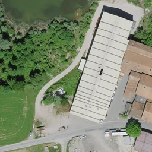
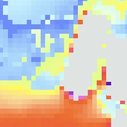
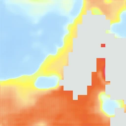
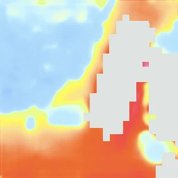
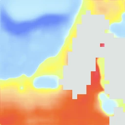
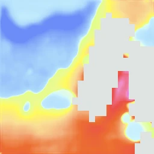
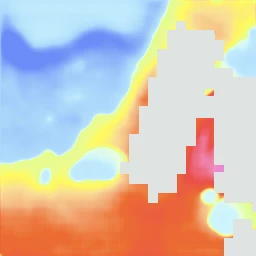
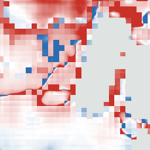
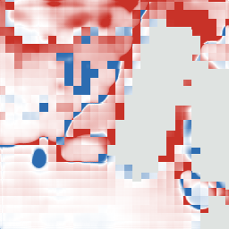
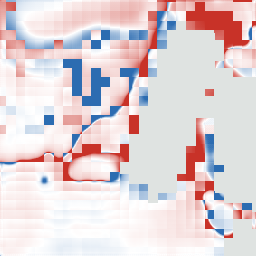
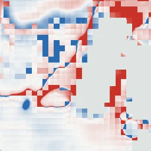
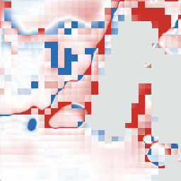
This is one tile. Its error does not follow the five-fold ranking: here the 14:00 shadow step (1.86 °C) is worse than height and water alone (1.78 °C), while over all test tiles it is better by 0.11 °C. In the top left (a lake in the true map) the photo-only and plus-height models are too warm; adding water reduces that. Tile 1829 is also the tile used in the layer graphic at the top.
Each pixel gets one of 14 heat levels. Owner: Timo. This is the approach with the most runs: two backbones, two photo sets, four seeds.
Every number is the mean over the folds, with the spread after it. Within one level and category accuracy use argmax decoding (a).
| Variant | Folds or runs | MAE, argmax decoding (°C) | MAE, median decoding (°C) | Within one level | Category accuracy |
|---|---|---|---|---|---|
| Colour-only rule (modal level per photo colour class) | 5 folds | 5.694 ± 0.483 | — | 56.4%a | 53.8%a |
| U-Net from scratch | 5 folds, seed 0 | 2.257 ± 0.125 | — | 75.5%a | 71.6%a |
| ResNet-34 encoder, seed 0 | 5 folds, seed 0 | 2.113 ± 0.109 | 1.975 ± 0.100 | 77.5%a | 73.5%a |
| ResNet-34 encoder, 4 seeds | 20 runs (5 folds × 4 seeds) | 2.116 ± 0.107 | 1.978 ± 0.099 | 77.4%a | 73.4%a |
The result is stable: four seeds give the same mean within 0.02 °C, so the 1.98 °C figure is not a lucky draw. The error is not spread evenly, though. Folds 0 to 2 average 2.05 °C and folds 3 and 4 average 1.86 °C; the spread between seeds is at most 0.05 °C on any single fold. The largest errors sit in the high-PET areas with green cover (see Finding 7).
One thing changed: the photos (SWISSIMAGE 2021 at the fitted footprint). Labels, split, model, loss, epochs, model selection, mask and input are the same. Four seeds times five folds make 20 runs for each photo set.
| Decoding | Original photos (°C) | 2021 photos (°C) | Reading |
|---|---|---|---|
| Argmax | 2.116 | 2.060 | Paired by seed and fold: mean difference -0.056 °C (sd 0.033), 2021 better in 20 of 20 runs |
| Median | 1.978 | 1.931 | Spread over runs 0.104. Gain about 0.05 °C; not paired seed by seed for the median runs |
Argmax by seed (2021 / original): 2.064 / 2.113, 2.055 / 2.124, 2.064 / 2.115, 2.059 / 2.113. Median seed means on the 2021 photos: 1.928, 1.948, 1.926, 1.920.
| Fold | Argmax, original | Argmax, 2021 | Median, original | Median, 2021 |
|---|---|---|---|---|
| Fold 0 | 2.194 | 2.146 | 2.068 | 1.982 |
| Fold 1 | 2.227 | 2.120 | 2.044 | 2.009 |
| Fold 2 | 2.177 | 2.152 | 2.051 | 2.035 |
| Fold 3 | 2.002 | 1.941 | 1.887 | 1.823 |
| Fold 4 | 1.981 | 1.942 | 1.837 | 1.804 |
The gain is small next to the spread between folds (about 0.1 °C) but has the same sign everywhere, so the training strategy holds on the new photos. The result is still about 0.43 °C above the 1.5 °C goal. The 2021 photos were chosen by date and forest colour, and they rank second of the three years in the displayed structural comparison. Seasonal and land-use alignment is still uncertain; 2021 is one nominal year after the 2020 target.
Colour analysis on the 2021 photos. Same colour rules as Finding 7, run again on the 2021 photos. Not verified against the photos tile by tile.
| Measure | Original photos | 2021 photos |
|---|---|---|
| Green surface, share of area | 48.8% | 52.2% |
| Brown surface, share of area | 7.3% | 3.8% |
| Green and hot, share of heat pixels | 7.09% | 7.83% |
| Brown and cool, share of heat pixels | 0.13% | 0.086% |
| Building footprints more than 60% vegetated | 515 | 713 |
The vegetated footprints cover 1.06% of building area on the original photos and 1.66% on the 2021 photos; this may be the photo date. Per-pixel colour still does not separate cool from hot (best single channel 0.723 against chance 0.72). The existing flags were built from the original photos, so their pixel overlap with the 2021 photos is lower (IoU 0.56 against 0.85).
| Group of tiles | Tiles | Mean error per tile (°C) |
|---|---|---|
| All tiles | 2,275 | 2.10 |
| Rest of the city (outside both groups below) | — | 1.74 |
| Complex (top 25% by edge detail) | 569 | 3.19 |
| Dense buildings (top 25% by building share) | 569 | 3.02 |
| Complex and dense buildings | 253 | 3.24 (median 3.21; none below 2.0) |
Errors come in clusters: whole neighbourhoods are off together. The model gets the broad pattern (forest and roads cool, sealed and built areas warm) but blurs fine detail. Its misses go both ways: too cool on the western fields and some built-up tiles, too hot on some sealed yards.
The model answers 13 ordered yes/no questions per pixel (is the level above k?). Owner: Chenjie. Same protocol as the Classification encoder runs; only the output and the loss change.
Five folds, all pixels, mean with spread across folds. Within one level and category accuracy use argmax (a) for Classification and the independent thresholds, and median (m) for CORAL and CORN.
| Approach | Variant | MAE, median decoding (°C) | MAE, argmax decoding (°C) | Within one level | Category accuracy |
|---|---|---|---|---|---|
| Classification | ResNet-34 encoder, seed 0 | 1.975 ± 0.100 | 2.113 ± 0.109 | 77.5%a | 73.5%a |
| Ordinal | 13 independent thresholds, run by Timo | 1.987 | 2.115 ± 0.107 | 77.1%a | 73.0%a |
| Ordinal | CORAL head, base mask | 2.070 ± 0.105 | 2.433 ± 0.107 | 72.4%m | 70.5%m |
| Ordinal | CORN head, base mask | 1.976 ± 0.097 | 2.121 ± 0.092 | 76.1%m | 72.9%m |
| Ordinal | CORN head, land-cover mask | 1.992 ± 0.087 | 2.125 ± 0.091 | 75.2%m | 74.0%m |
| MAE by surface group (°C) | Unflagged | Green and hot | Brown and cool | Green | Brown | Grey |
|---|---|---|---|---|---|---|
| CORAL, base mask (median) | 2.106 | 1.676 | 4.354 | 1.737 | 2.213 | 3.013 |
| CORN, base mask (median) | 1.994 | 1.864 | 4.527 | 1.640 | 2.125 | 2.914 |
| CORN, land-cover mask (median) | 1.938 | 2.847 | 4.781 | 1.680 | 2.161 | 2.889 |
| Classification, seed 0 (argmax) | 2.115 | 2.303 | 3.537 | 1.731 | 2.298 | 3.179 |
The Classification row uses argmax decoding and the Ordinal rows use median decoding, so the group columns are not yet like for like.
The original RGB-plus-colour-classes ordinal plan is distinct from the newer physical-layer input test, which now has a saved fold-0 result. That single-fold test does not replace the original five-fold CORN comparison. CORAL with the land-cover mask was not run, since CORN is better on the base mask.
One number per pixel in °C. Owner: Timo. The exact-degree target is the new part: it removes the 14-bin floor, but it is scored against a continuous exact-degree target with a different valid-pixel set.
A cumulative input ablation cut the five-fold mean error from 1.922 °C (2021 photo only, seed 0) to 1.66 °C with height, water and one shadow layer (14:00), and to 1.63 °C with shadow at three hours of the day. Height and water give 1.77 °C; the shadow layer (the 14:00 sun on the 21 June, computed from the height model) adds about 0.11 °C more. Shadow wins on all ten fold-seed pairs (two seeds). The water layer is a 2026 release and the photos are from 2021, so historical boundary changes are a source of uncertainty; the gain alone does not establish a date-mismatch mechanism.
complete All five folds done for the exact target. The tests in the table below use fold 0 only, except the three-hour shadow row, which has all five folds and two seeds.
All on fold 0 (one seed) with the same 26.0 M scored pixels, so they can be compared with each other; the three-hour shadow row also has all five folds. The reference is the shadow model at 1.749 °C. Fold 0 is one of the harder folds; the five-fold mean for the same model is 1.66 °C.
| Test | MAE (°C) | What it shows |
|---|---|---|
| Shadow at 10:00, 14:00 and 18:00 | 1.716 (five folds: 1.635) | For seed 0, a small gain on all five folds: five-fold mean 1.635 °C against 1.659 °C with the 14:00 layer alone (folds 1.716, 1.639, 1.725, 1.579, 1.513; seed 0), and 1.630 °C against 1.657 °C with two seeds on each side: better on four of five fold means, about 0.005 °C worse on fold 3, and in 9 of 10 seed and fold pairs. On fold 0, 304 of 475 tiles are better, and hot pixels gain most: the error at or above 42 °C drops from 2.65 to 2.32. |
| Average of seed 0, seed 1 and the three-hour model | 1.709 | Averaging models gains 0.01 to 0.04 °C at most. |
| Hot pixels weighted four times in the loss (from 40 °C) | 1.888 | The error at or above 40 °C falls from 1.83 to 1.09, but the whole map shifts warm (bias +0.58 °C) and the overall error rises by 0.14 °C. |
| Bright, flat ground left out of training | 1.757 | No gain; leaving it out of the scoring changes the error by about 0.01 °C. |
| Sky-view factor added (how enclosed a pixel is) | 1.725 | No gain over the three-hour shadow model (1.716). Slightly better in settled areas (2.31 against 2.32 °C), worse on hot pixels. How open the surroundings are, as the height layer shows it, does not explain the settlement error. |
| Photos from 2020 (the label year) instead of 2021 | 1.912 | Worse, not better. Matching the photo year to the label year does not explain the remaining error. |
Regression has no decoding, so its MAE sits in the median column (r). Classification is shown on the same folds as a reference.
| Approach | Variant | Folds or runs | MAE, median decoding (°C) | MAE, argmax decoding (°C) | Within one level | Category accuracy | Pixels scored (M) |
|---|---|---|---|---|---|---|---|
| Classification | Reference: ResNet-34 encoder, seed 0, fold 0 only | fold 0 of 5 | 2.066 | 2.189 | 77.3%a | 74.2%a | 26.6 |
| Regression | Midpoint target (level midpoints in °C) | fold 0 of 5 | 2.079r | — | 75.3%r | 73.7%r | 26.6 |
| Classification | ResNet-34 encoder, seed 0 | 5 folds, seed 0 | 1.975 ± 0.100 | 2.113 ± 0.109 | 77.5%a | 73.5%a | 128.1 |
| Regression | Exact target (5 m degrees) Scored against exact degrees (stricter). | folds 0 to 4 of 5 | 2.005 ± 0.081r | — | 75.6%r | 73.5%r | 125.7 |
The historical original-photo exact-target reference has five folds and one seed; the current three-hour layered recipe has five folds and two seeds. The midpoint target still has fold 0 only, and fold 0 is one of the harder folds (Classification: 2.066 °C median there, against 1.978 °C over all runs), so compare that row with the fold 0 reference.
These saved follow-up runs use fold 0 and one seed. The regression variants keep 2021 photos and the exact target; all rows score 26,025,830 valid pixels. Head tests change the output formulation and carry additional provenance caveats. Test results informed which directions were retained, so this is an exploratory development record, not a held-out model-selection contest.
| Variant | Fold-0 MAE (°C) | Interpretation and coverage |
|---|---|---|
| Three-hour reference | 1.716 | Reference for the following three-hour variants. |
| 100 epochs | 1.711 | About 0.005 °C lower test MAE; not an independent validation of an epoch choice. |
| Five shadow hours | 1.712 | Small change versus three hours on this fold; no five-fold coverage for this variant. |
| Learning rate 0.001 | 1.726 | No improvement on this fold. |
| Learning rate 0.004 | 1.727 | No improvement on this fold. |
| Batch size 8 | 1.744 | Worse on this fold; a single run does not isolate general batch-size effects. |
| Bright-flat channel | 1.726 | No gain over the three-hour reference; distinct from the older 14:00-only bright-flat test. |
| Settlement channel | 1.744 | No gain over the three-hour reference. |
| Sky-view factor | 1.725 | No gain over the three-hour reference. |
| Classification + physical layers | 1.989 | New photo/target/input group; not a controlled comparison with the old classification headline. |
| CORN + physical layers | 1.865 | Median decoding; data/channel provenance incomplete in its saved config. |
Eight-way test-time augmentation is recorded on all five seed-1 three-hour checkpoints: fold MAEs 1.7179, 1.6126, 1.6816, 1.5688 and 1.4937 °C, a mean of about 1.615 °C. Plain inference for that seed averages 1.626 °C. All five folds improve, but the TTA evidence is currently a rounded run log, not a complete structured result bundle, and it has one-seed rather than two-seed coverage.
The 1.615 TTA score has one-seed coverage, unlike the 1.630 two-seed reference. Subgroup metrics and a complete structured result record are still missing.
A small difference on one fold does not prove an idea has no effect. It records why the project did not adopt that variant at that point. Training randomness, difficult regions and repeated test exposure all limit the inference.
Classification, Ordinal and Regression, one row per variant, with the colour-only baseline on top. Numbers are means with the spread across folds (five folds) or runs (20 runs) after them; a spread is only given from three folds or more. Rows that cover fewer than five folds are marked. This historical cross-target inventory is not a single ranked benchmark. Current exact-target layer results and map scores appear in their own comparison groups.
| Approach | Variant | Photos | Labels / target | Folds or runs | MAE, median decoding (°C) | MAE, argmax decoding (°C) | Within one level | Category accuracy | Pixels scored (M) |
|---|---|---|---|---|---|---|---|---|---|
| Baseline | Colour-only rule (modal level per photo colour class) | original | 14 levels | 5 folds | — | 5.694 ± 0.483 | 56.4%a | 53.8%a | 128.1 |
| Classification | U-Net from scratch | original | 14 levels | 5 folds, seed 0 | — | 2.257 ± 0.125 | 75.5%a | 71.6%a | 128.1 |
| Classification | ResNet-34 encoder, seed 0 | original | 14 levels | 5 folds, seed 0 | 1.975 ± 0.100 | 2.113 ± 0.109 | 77.5%a | 73.5%a | 128.1 |
| Classification | ResNet-34 encoder, 4 seeds | original | 14 levels | 20 runs (5 folds × 4 seeds) | 1.978 ± 0.099 | 2.116 ± 0.107 | 77.4%a | 73.4%a | 128.1 |
| Classification | ResNet-34 encoder, 4 seeds | 2021 | 14 levels | 20 runs (5 folds × 4 seeds) | 1.931 ± 0.104 | 2.060 ± 0.101 | 78.4%a | 73.9%a | 128.1 |
| Ordinal | 13 independent thresholds, run by Timo | original | 13 ordered yes/no outputs | 5 folds, seed 0 | 1.987 | 2.115 ± 0.107 | 77.1%a | 73.0%a | 128.1 |
| Ordinal | CORAL head, base mask | original | 13 ordered yes/no outputs | 5 folds, seed 0 | 2.070 ± 0.105 | 2.433 ± 0.107 | 72.4%m | 70.5%m | 128.1 |
| Ordinal | CORN head, base mask | original | 13 ordered yes/no outputs | 5 folds, seed 0 | 1.976 ± 0.097 | 2.121 ± 0.092 | 76.1%m | 72.9%m | 128.1 |
| Ordinal | CORN head, land-cover mask | original | 13 ordered yes/no outputs | 5 folds, seed 0 | 1.992 ± 0.087 | 2.125 ± 0.091 | 75.2%m | 74.0%m | 128.1 |
| Classification | Reference: ResNet-34 encoder, seed 0, fold 0 only | original | 14 levels | fold 0 of 5 | 2.066 | 2.189 | 77.3%a | 74.2%a | 26.6 |
| Regression | Midpoint target (level midpoints in °C) | original | level midpoints, °C | fold 0 of 5 | 2.079r | — | 75.3%r | 73.7%r | 26.6 |
| Regression | Exact target (5 m degrees) | original | exact degrees, °C (5 m raster) | folds 0 to 4 of 5 | 2.005 ± 0.081r | — | 75.6%r | 73.5%r | 125.7 |
a argmax decoding · m median decoding · r regression, direct degrees (no decoding). Within one level and category accuracy follow the decoding marked on each row, because the median-decoded scores are not stored for the Classification runs.
Regression with the exact target is scored against exact degrees on 26.0 M pixels (fold 0; 23.9 M in fold 1, 24.4 M in fold 2, 25.8 M in fold 3, 25.5 M in fold 4), a different pixel set and continuous target scale; it is not directly comparable with the other rows. The reference row shows Classification (ResNet-34, seed 0) on fold 0, the fold of the midpoint-target Regression row; for the exact target the seed-0 row above covers the same five folds.
Spread: standard deviation across the five folds for seed-0 rows, across the 20 runs for the four-seed rows. Pixels scored: summed over the folds of the row (one seed; the four-seed rows use the seed-0 count). The median for the original photos comes from the per-fold seed chart; the median for the independent thresholds from the project notes.
Split: five spatial folds of 5 × 5 tile blocks, base mask, RGB input. Hot-tail behaviour depends on the head, decoder and recipe. Some rounded 0.00% shares are nonzero; layered CORN also predicts a small level-13 share. See the per-model error chapter.
Settlement accounts for about 60% of absolute error in the fold-0 analysis. Rare hot pixels, bright-flat surfaces, water and forest regions show different failure patterns.
The mapped models strongly under-represent the hot end. The mapped classifier predicts about 0.0019% of pixels at ≥43 °C; the mapped independent-threshold model predicts none. Rounded zero values must not be read as universal statements about other heads or decoders. Regression predicts 43 °C or more for 0.05 to 0.08% of pixels, against 0.71% in the true map, about a tenth as many; the table does not show whether those are the right pixels. The 14:00 shadow layer lowers the error on pixels at 42 °C or more from about 2.9 to 2.4 °C too cold; the three-hour model does not lower it further (2.5 °C). The three-hour row is one seed (seed 1) and the others are seed 0, so rows differ by seed as well as by inputs.
| Mapped model | Photo / decoder / seed | City MAE (°C) | Predicted ≥42 °C | Predicted ≥43 °C | Bias on true ≥42 °C (°C) |
|---|---|---|---|---|---|
| Classification | 2021 photos; Median; seed 0 | 2.054 | 0.345% | 0.0019% | -2.98 |
| Ordinal (independent thresholds) | Original copies photos; Independent thresholds, median; not CORN; seed 0 | 2.355 | 0.118% | 0.0000% | -4.13 |
| Regression, photo only | 2021 photos; Direct degrees; seed 0 | 1.920 | 0.273% | 0.0759% | -2.97 |
| Regression, + height and water | 2021 photos; Direct degrees; seed 0 | 1.770 | 0.308% | 0.0674% | -2.88 |
| Regression, + shadow 14:00 | 2021 photos; Direct degrees; seed 0 | 1.659 | 0.378% | 0.0692% | -2.43 |
| Regression, + shadow at three hours | 2021 photos; Direct degrees; seed 1 | 1.626 | 0.392% | 0.0530% | -2.48 |
The whole-city table above describes several mapped models. The investigations below mostly use regression with 2021 photos, height, water and a single 14:00 shadow input, seed 0, spatial fold 0: 475 test tiles, 26,025,830 scored pixels and 1.749 °C MAE. Three-hour, weighted-loss and other follow-ups are named explicitly.
Surface subsets overlap, and tile means differ from pooled pixel metrics. A severe error on a small patch can have little effect on citywide MAE. The following analyses revised several early explanations, including canopy-related over-warming and the timing of shade.
Settlement contains 44.5% of scored pixels but 60.1% of absolute error. Its mean signed bias is only +0.05 °C, so the large MAE is not a single warm offset. Subtracting a class-wide bias leaves settlement MAE essentially unchanged at 2.36 °C.
| Analysis subset | Share of scored pixels | Share of absolute error | MAE (°C) | Bias (°C) |
|---|---|---|---|---|
| Settlement | 44.5% | 60.1% | 2.36 | +0.05 |
| Bright-flat | 0.3% | 0.9% | 5.07 | +3.98 |
| Height-proxy building/tall | 37.4% | 19.6% | 0.92 | −0.11 |
| 14:00 shadow | 16.5% | 13.3% | 1.41 | −0.20 |
| Mapped water | 1.3% | 1.5% | 2.01 | −0.42 |
| Grey photo-colour group | 16.2% | 22.7% | 2.45 | +0.22 |
The worst ten tiles contribute 4.7% of total absolute error; the worst fifty contribute 17.9%. It takes 174 of 475 tiles to account for half. Fixing a striking example is useful for diagnosis, but is not by itself a route to the overall goal.
For luminance below 60, mean bias is −0.24 °C. Underprediction occurs on 303 of 465 evaluable tiles, but only ten have bias below −2 °C. This is a modest aggregate tendency, not an explanation for every large cold region.
These measurements motivated targeted input tests. Settlement as an extra three-hour-model input reached 1.744 versus 1.716 °C on fold 0; sky-view factor reached 1.725. Neither established a gain. A coarse class can locate much error without containing the information required to correct it.
Tile 1065 contains a large pale, smooth surface. The reference PET is cool over that patch, while the model predicts it hot. Tile-average reference and prediction are about 27.1 and 34.7 °C; tile MAE is about 8.4 °C, with local errors of +8 to +12 °C over the basin-like surface.
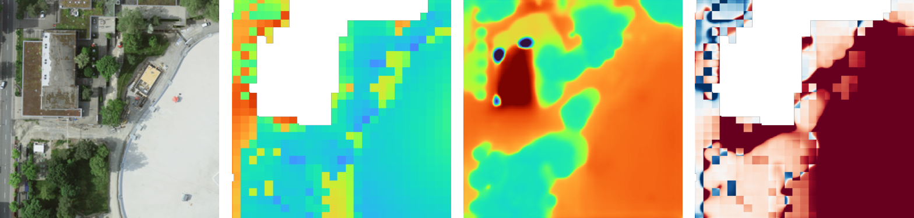
The screenshot-derived and source-raster labels agree on 99.7% of the checked valid pixels here. That rules out a palette-decoding discrepancy as the main local explanation; it does not prove that modelled PET and the photographed surface describe the same state. Whether the surface was filled, wet, dry or shaded in the relevant source conditions was not verified. Similar failures across the tested models suggest a shared difficulty, not proof that architecture changes could never help.
Early colour summaries called tiles 921 and 139 vegetation failures. Height and settlement checks revised that reading: tile 921 has 58% low/open ground with +3.12 °C bias, versus +0.87 °C on tree-height pixels; tile 139 has 72% open ground with +1.43 °C bias, versus −0.08 °C on tree-height pixels. The coarse settlement layer covers 82% and 100% of these tiles. The evidence points more strongly to open ground in built areas than to a general canopy problem. Settlement is an area class, not proof every pixel is sealed.
Tile 1130 must not be conflated with 1065. Its hot-predicted area has reference median 35.5 °C and prediction 38.4 °C, an approximately +3 °C difference. A previously quoted +15 °C referred to a small bright-flat subset, not the whole tile.
| Check | Measured result | What it supports |
|---|---|---|
| Global photo-brightness offset, leave-one-tile-out | Mean tile MAE 1.848 before and after | No useful single correction; this tile-average is not the pooled 1.749 score. |
| Bright-flat input, 14:00-shadow model | About 1.750 versus 1.749 °C | No measurable fold-0 gain. |
| Bright-flat input, three-hour model | 1.726 versus 1.716 °C | No fold-0 gain in the newer recipe either. |
| Exclude bright-flat from training | 1.757 versus 1.749 °C | No improvement on all scored pixels. |
| Also exclude bright-flat from scoring | 1.747 versus 1.739 °C for the corresponding models | Moves both scores by about 0.01 °C; changes the measure, not the predicted map. |
The photo-derived bright-flat mask can also select roofs: in a one-in-seven tile sample, 38% of its pixels were above 3 m. Its name is a heuristic, not ground-truth surface annotation. Severe local errors justify investigation even when their total pixel share is small.
Mapped-water pixels in the fold-0 analysis number 341,669 across 95 tiles, with MAE 2.01 °C and bias −0.42 °C. Tile 201’s water remains about 1.9 °C too cool. Some small-water subsets have much larger errors: tile 605 has 721 mapped-water pixels with about 10.9 °C MAE. These are water-subset scores, not whole-tile MAEs.
Colour and edge checks exposed ambiguity rather than a single mask defect. Among 80 tiles with at least 200 mapped-water pixels, 64 have vegetation-like colour on most masked pixels. Water can itself be green or bright; that colour rule does not establish that 64 masks are wrong. A −2 px east/west and −7 px north/south image-grid shift improves boundary-edge matching on 11 of 14 checked tiles, but edge alignment does not prove correct shorelines or justify applying a global correction.
The rendered WMS is the 2026 swissTLM3D release. A checked 2021-release Bern extract contains river/lake centreline geometries whose reference years range from 2010 to 2018; it is not a set of water polygons observed in 2021. Those reference dates describe the checked archive objects, not every object in the current WMS. Neither release date alone quantifies temporal mismatch or proves that part of the model’s gain comes from it.
| Attempt | Evidence | Outcome |
|---|---|---|
| Smooth, low-saturation photo rule | 16 tiles: mean IoU 0.23, median 0.10; tile 201 IoU 0.75 | Finds some large water, also selects lawns, roofs and bare ground; not adopted. |
| Gradient-boosted RGB/texture water classifier | 1.5 M training pixels; 17 test tiles with ≥2% WMS water: pooled IoU 0.693, median tile IoU 0.394 | Better pooled agreement, but several small/narrow channels still missed. |
| Additional fine edge/darkness features | Pooled IoU 0.681; median tile IoU 0.340 | No improvement over the coarse-feature classifier. |
| Seven small-water tile check | Five masks look plausible by darker-inside contrast; two ambiguous or inconsistent | Both missed narrow water and questionable mask surfaces occur; seven tiles do not establish prevalence. |
The WMS input remains part of a recipe with lower aggregate error, while these quality concerns remain open. A reliable replacement needs photo-aligned independent shoreline checks; learning to reproduce the WMS cannot by itself validate it.
For reference PET ≥40 °C, the detailed analysis compared pixels predicted more than 3 °C too cool with pixels within 1.5 °C. The underpredicted group is darker, more often shaded and much more often inside settlement. These associations describe the selected errors; they are not causal effects.
| Hot-pixel group | Height above ground | 14:00 shade share | Settlement share | Photo brightness | Reference PET |
|---|---|---|---|---|---|
| More than 3 °C too cool | 1.60 m | 12% | 93% | 95 / 255 | 41.6 °C |
| Within 1.5 °C | 0.51 m | 2% | 43% | 114 / 255 | 41.0 °C |
Removing it does not improve the difficult group. Height+water versus height+water+14:00-shadow predictions were scored on the same pixels:
| Subset | Pixels | MAE with shadow (°C) | MAE without shadow (°C) |
|---|---|---|---|
| All scored | 26,025,830 | 1.749 | 1.846 |
| Reference ≥40 °C | 3,180,988 | 1.832 | 2.041 |
| Reference ≥40 °C and shaded at 14:00 | 105,004 | 4.547 | 5.040 |
| Reference ≥40 °C and not shaded at 14:00 | 3,075,984 | 1.739 | 1.938 |
Shadow improves each listed group. The difficult hot-but-shaded subset is only about 0.4% of scored pixels, yet remains roughly 4.4 °C too cool with shadow. This contradicts the simple explanation that supplying shadow made those predictions worse.
Of the 105,004 hot-but-14:00-shaded pixels, 73% are also shaded at 10:00, 42% at 18:00 and 26% at all three hours. Only 11% are lit at both other hours. That lit-both group still has MAE 4.83 °C, versus 5.20 °C for pixels shaded at all three times. The single-shadow model stays too cool in both cases.
Three shadow hours improve overall fold-0 MAE from 1.749 to 1.716 °C and the hot-but-shaded group from 4.547 to 4.134 °C. But the later timing check does not support “these pixels are simply sunlit at another hour” as the explanation. The target is PET at 14:00, not a daily integral. Surface properties, source geometry/date differences and model limitations remain possible, unseparated causes.
A hot-weighted L1 experiment multiplied the loss weight by four for reference values ≥40 °C. It improved the hot subset but shifted the overall map warm. The trade-off is visible only when bias and subgroup KPIs accompany the overall MAE.
| Recipe | Overall MAE | Overall bias | MAE ≥40 °C | MAE ≥42 °C | Bias <25 °C |
|---|---|---|---|---|---|
| Unweighted reference | 1.749 | −0.076 | 1.832 | 2.653 | +0.938 |
| Hot pixels weighted ×4 | 1.888 | +0.577 | 1.094 | 1.643 | +1.278 |
The hot improvement is real in this evaluation, but costs 0.139 °C overall and additional warm bias on cool pixels. This setting was not adopted. It does not show that all weighting strategies fail; other weights and thresholds were not tried.
A separate saved-softmax classifier check on fold 0 and exact scoring gives argmax MAE 2.823 °C, median 2.451 and probability-weighted mean 2.331. The weighted mean improves average error versus median, while hot-pixel MAE at ≥42 °C worsens from 4.231 to 4.713 °C. This older classifier/checkpoint is not the current 20-run headline or the city-map classifier; do not substitute these figures for that benchmark.
Post-hoc block averaging of the same predictions raises MAE from 1.749 to 1.865 °C at 9.45 px blocks, and to 2.132 °C at 19 px. This tests smoothing existing predictions, not training a model on a coarser output grid. It does not prove that every coarse-grid architecture would fail.
The hotspot search found spatially connected high-error regions, including forest tiles 604, 281 and 478. Their tile MAEs are approximately 3.45, 2.30 and 2.77 °C. Local signed errors approach −8 °C in 604 and +8 °C in 281: the failure goes in both directions.
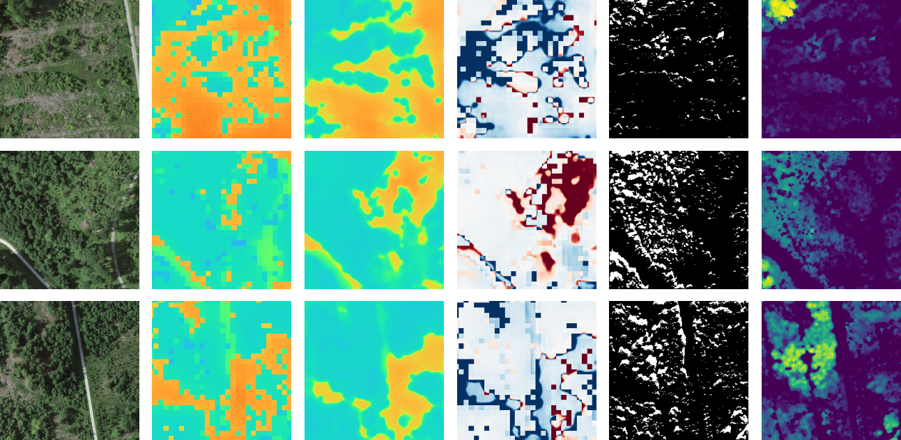
Pale low-height strips in 604 and 478 look like thinned or cleared forest. The model stays cool over some patches that the target marks warmer. Tile 281 has the reverse pattern on a dense stand. These examples suggested a photo/target date mismatch, but appearance alone did not establish the mechanism.
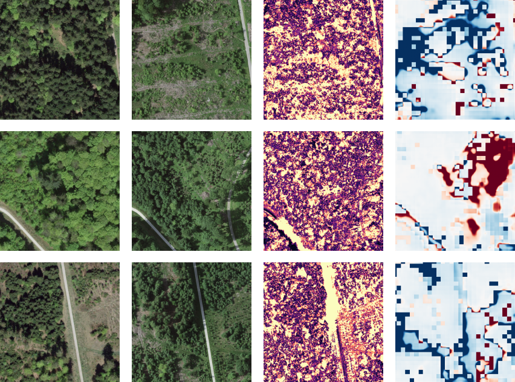
Retraining the single-shadow recipe on the 2020 WMS imagery gives 1.912 °C versus 1.749 °C on acquired 2021 imagery, rather than the predicted improvement. The photo-year explanation was therefore withdrawn as the main account of these forest errors. The delivery paths, saturation, illumination and possible seasonal differences also change, so the experiment cannot assign a zero local effect to genuine surface change.
The imagery chapter preserves the acquisition, inference-only swap and retraining sequence. The cause of these large errors remains open. Agreement with the source raster rules out one decoding explanation in checked areas; it does not validate every physical assumption in the PET model.
Much error lies broadly in settlement; some bright-flat surfaces fail dramatically but carry little total weight; shadow helps even on hot shaded pixels; water is useful but imperfect; and the largest forest failures do not yet have a tested causal explanation. No single tested explanation accounts for all error clusters.

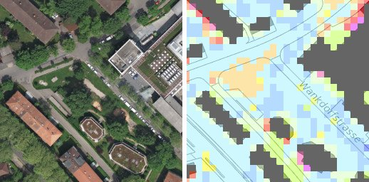


Each tile is predicted by a model that never saw its block during training: ResNet-34, seed 2, median decoding, original photos. The tiles show different kinds of result. They are not the best tiles.
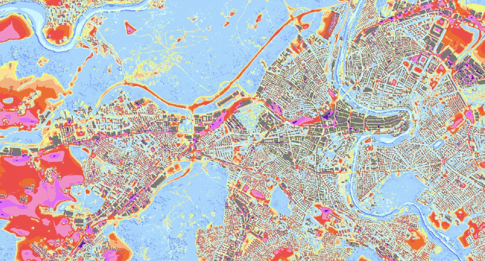
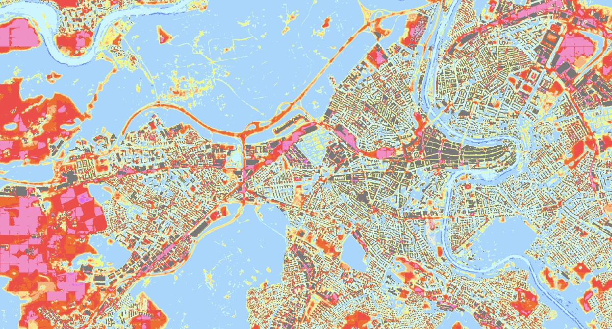
PredictionTrue mapAbsolute error per pixel, in °C, on the same scale as the heat map colours. Unscored pixels (buildings and flagged areas) are left blank.

Left to right: aerial photo, heat map as published, model prediction. Same tile, same scale.
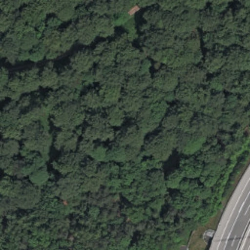


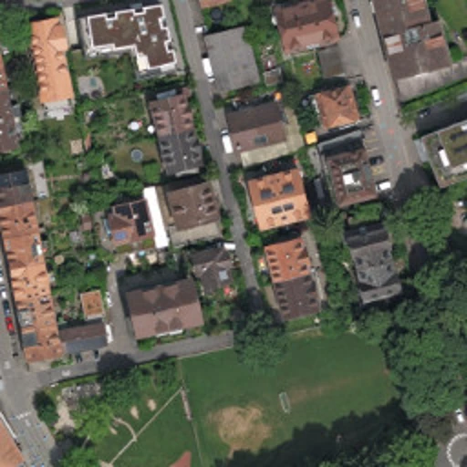
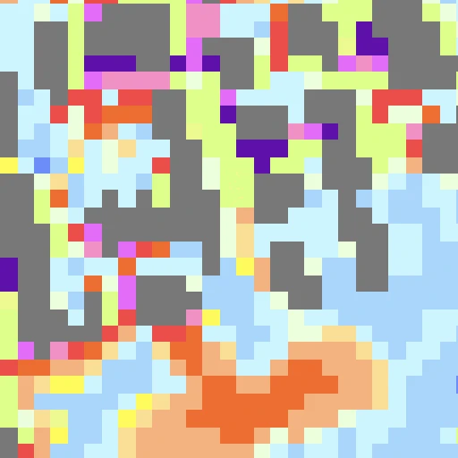
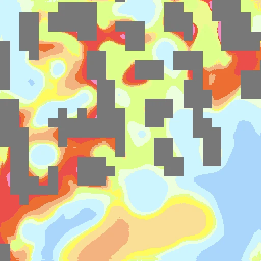
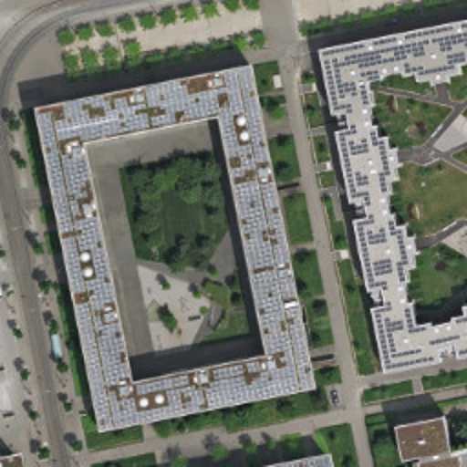

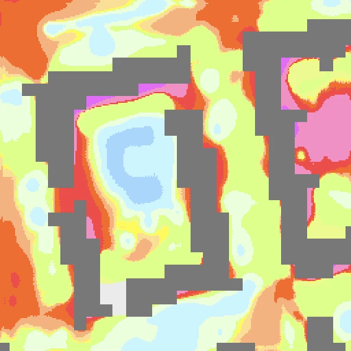
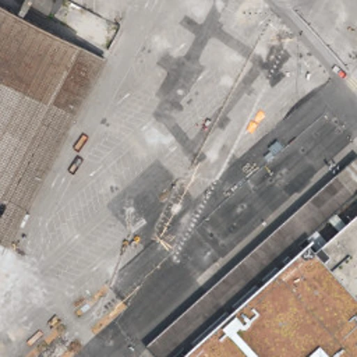
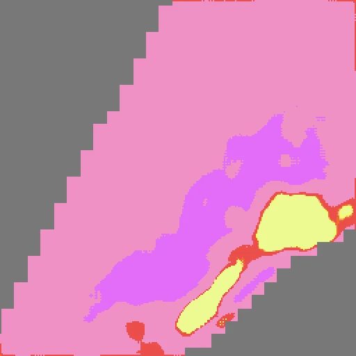


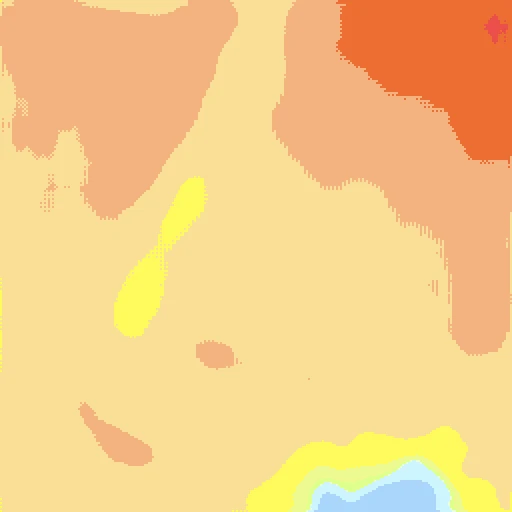
Across the whole city, 0.71% of pixels are at 43 °C or more and 2.88% at 42 °C or more (exact degrees). The mapped classifier predicts about 0.0019% and the independent-threshold model 0.00% at 43 °C or more; Regression predicts 0.05 to 0.08% and is 2.4 to 3.0 °C too cold on the pixels at 42 °C or more. The hot subset has a strong negative mean bias; see the model-by-model hot-end table in Error understanding. The Classification and Ordinal chapters quote 0.77% above 43 °C: that is the share on the 14-level map, which differs a little from the exact map, so the two figures are not interchangeable.
The labels are for 2020; the photos are SWISSIMAGE 2021 chosen by date and forest colour. 2021 has structural correlation 0.43 in the shown sample (2018: 0.42; 2024: 0.47), and the original photos match no single year cleanly.
Original-photo ordinal comparisons use one seed. The current layered regression uses two seeds across five folds; many later tuning and layer-input head tests cover fold 0 only.
Scored against exact degrees, any method that predicts bin midpoints has a minimum error of 0.78 °C on tile 201.
Fields that look green are labelled 40 °C. Seasonal and land-use mismatch may limit reconstruction, especially in the agricultural west; its contribution has not been isolated.
Zürich provides labelled transfer evidence, but its scale and mask differ from Bern. Harmonised quantitative transfer and reverse-direction evaluation remain open.
2,275 tiles from one city cover few building styles and little topography. The effective number of independent samples is smaller than the tile count.
The source product is Bern’s modelled PET Tag 2020 at 14:00. Reconstructing this thermal-comfort index does not establish accuracy for measured air temperature, surface temperature or other weather conditions.
The historical screenshot target has 14 bins in approximately 9.45 px rendered cells; the current source raster also provides exact degrees on a 5 m grid. Street lines and labels can be painted over, but a few large patches stay unknown. Bin edges are uneven (3 °C wide at the cool end, 1 °C at the hot end).
23–26 °C covers 37% of the area and > 43 °C covers 0.7%. Extreme heat is the most relevant level and the rarest one.
Roofs carry no temperature in this layer, so the model never learns anything about them. Predictions on buildings must be masked out at evaluation too.
Outlines and photo disagree in places. The flags come from a learned detector (IoU about 0.64), so a few mismatches will be missed and some small real buildings flagged.
The palette-to-level mapping comes from a colour fit, not from source data, and tiles were exported at different opacities. Each tile's palette is fitted separately. The acquired raw raster removes palette decoding for exact-target runs; screenshot-based historical runs retain this source of uncertainty.
Scale changes and Zürich provide different tests. Target/mask comparability and reverse-direction transfer remain explicit questions.
The supplied Large tiles cover roughly twice the ground width. Their similar class histogram does not establish equivalence: footprint, spatial overlap, resolution and cell rendering differ. A measured transfer experiment must avoid overlap leakage and report these changes. No completed Large-scale benchmark is claimed here.
The recorded Zürich preparation joins 2025 imagery and 2024 heat tiles, with 95,483 paired tiles. An initial Bern-to-Zürich evaluation reports about 3.13 °C without Zürich training. Zürich therefore does have labels and permits a quantitative check; this score is not directly comparable with Bern because the level definition and mask differ.
The latest recorded Zürich training attempt crashed and was queued again. This page does not verify its current execution state. Training on Zürich, testing back on Bern, matching the physical target and controlling differences in coverage remain separate tasks.
Distinguish city shift, photo year, label product and masking changes. A labelled second city is necessary evidence, not proof that the Bern recipe generalises.
The original quickstart rebuilds screenshot levels, building/land-cover flags and masks from the supplied image pairs. It does not by itself provision the current layered exact-target benchmark.
Some older result files omit photo/target/channel metadata or source revisions. Those gaps remain explicit rather than reconstructed from a convenient filename. A complete checksummed current-data handoff and verified end-to-end rebuild remain open.
The intended measurement rules and their development-evaluation caveats apply to all approaches: the evaluation guide in the project repo has the splits, metrics and required runs.
433b8417-82d7-4b15-9b90-9785e692c135, and last data update 1 May 2023. Source rights remain with the providers. Reuse of derived figures must retain applicable credits and Bern’s terms; no blanket Creative Commons licence is granted here.Independent student research, not an official map service or an endorsement by ETH Zürich or the data providers. Predictions reconstruct modelled PET and are not validated planning, health or emergency guidance. Source data and derived results carry accuracy, temporal and coverage limitations.